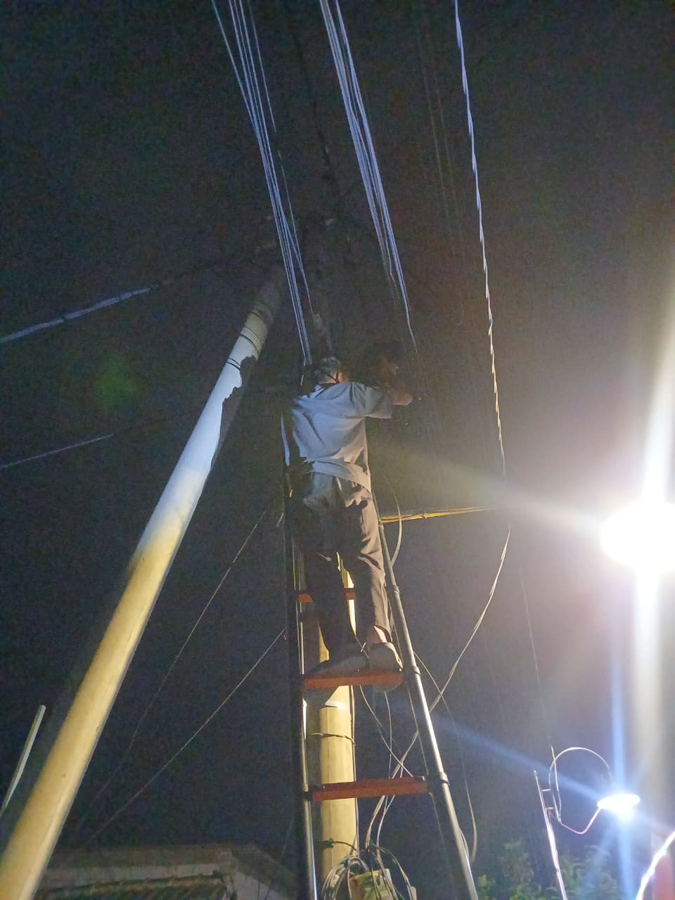
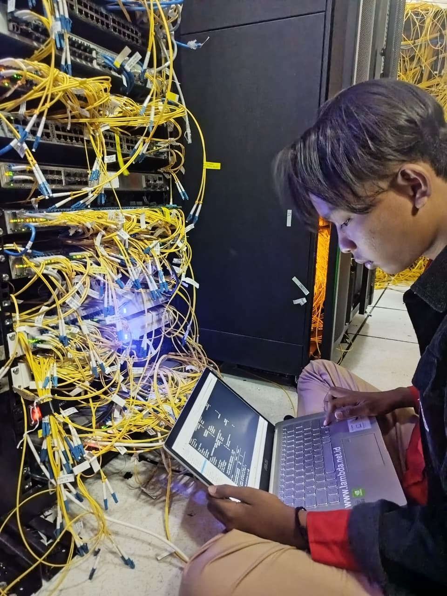

Skills
Mikrotik
Ubuntu
Cisco
Debian
Switch
Pengalaman PKL
FTTH
PT. Lambda Sinergi Telekomunikasi


FTTH( Aktivasi ke pelanggan,Menarik Kabel FO,Installasi ODP-ODC )
MONITORING DAN MAINTENANCE
PT. Lambda Sinergi Telekomunikasi

Monitoring jaringan Cacti,The dude,Smokeping,Librenms,Membalas Chat Client - Maintenance di Cyber dan IDC